INTRODUCTION - AIR CONDITIONING CASING AND COMPONENTS
- Path
- Descriptions > 50 AUXILIARY UNITS > 5040 AIR CONDITIONING CASING AND COMPONENTS > INTRODUCTION - AIR CONDITIONING CASING AND COMPONENTS
- Kind
- system description
- Applies to
- all engines; all production periods
- Interactive page
- https://sloeber94.github.io/elrnDB-aGt/en/#/125000393
Applies to: all engines; all production periods
SPECIFICATIONS
INTRODUCTION
Human beings, as a result of primary and secondary physiological processes, alter the air in the environment in which they live because they increase the rate of carbon dioxide, decrease the percentage of oxygen, give off aromatic substances (e.g. by smoking) and increase the concentration of pathogenic bacteria; all of this makes a closed environment less healthy, especially if it is small.
One of the solutions for improving these conditions is to use an air conditioning system.
An efficient air conditioning system fitted on the vehicle should therefore control the main environmental factors that determine the physiological well being conditions for people, which are:
- temperature;
- humidity;
- air speed;
- purity of the air in the passenger compartment.
The variation in the temperature and the humidity of the air in the passenger compartment is achieved by means of the following two systems:
- manually operated climate control system, which is fitted as standard on the vehicle.
- automatically operated climate control system (dual zone) temperature and ventilation, available on higher specification vehicles.
The two systems are described below together for the shared components such as, for example, the refrigeration cycle and separately for all the different components such as, for example the air temperature regulation and control systems because on one system the operating logic (heating/mixing/cooling) in two zones of the passenger compartment is far more sophisticated than on a manually operated type system.
Refrigerant fluid
The fluids designed for use in a refrigerant circuit are known as refrigerants. These are fluids which, in addition to having a LOW BOILING POINT at normal pressure should have:
- A LOW FREEZING POINT, to prevent solidification even in the harshest climates;
- A HIGH EVAPORATION TEMPERATURE (change from a liquid state to a gaseous state)
- A LOW CRITICAL TEMPERATURE (maximum temperature above whch it is no longer possible to liquefy the gas, whatever the pressure applied).
In addition, they should not be:
- EXPLOSIVE AND FLAMMABLE; to prevent danger in the case of leaks inside the engine comparment;
- TOXIC OR HARMFUL; in order not to cause injury to people;
- OXIDIZING AND/OR CORROSIVE; in order not to destroy the system component materials;
- It should also be possible to mix them with the special lubricants used in these systems to ensure the perfect lubrication of all the system constituent components (compressor, expansion valve, pipes, connectors, etc.).
The most environmentally friendly of the refrigerant fluids currently used in automotive systems is the hydro-fluoro-carbon (HCF) CH2F CF3 or R134a.
Oils for refrigerant systems
Oil is needed to lubricate gaskets, seals, washers and other moving parts of the compressor. A certain amount of oil is introduced into the circuit with the refrigerant and is helpful in keeping the expansion valve in top working order. Only special oils which do not produce foam should be used in air conditioning systems. These are highly refined mineral oils from which impurities such as wax, sulphur and water have been carefully removed. Engine oil should not, under any circumstances, be used in air conditioning systems.
Always check the recommendations of the compressor manufacturer before adding oil into the refrigerant system.
Main air conditioning system components
The main system components are illustrated in the diagram.
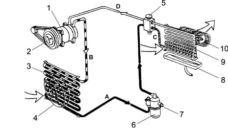
1 - Compressor
2 - Pulley with electromagnetic type clutch
3 - Condenser
4 - Condenser/fan cooling fan
5 - Thermostatic expansion valve
6 - Drier accumulator filter with reservoir function
7 - 4 stage pressure switch (high pressure)
8 - Evaporator condensation collection tank
9 - Cooling fan
10 - Evaporator
A- Pressurized fluid
B - Pressurized gas
C - Depressurized fluid
D - Depressurized gas
Refrigerant circuit (operation)
The aim of refrigeration equipment is to absorb heat from an environment. In order to do this an air conditioner has recourse to certain fluids (known as refrigerants) capable of cooling down (lowering their temperature) and changing state (from liquid to gas) when they are subject to a large drop in pressure, expanding. They are therefore capable of absorbing heat from the environment. When the temperature increases thereby also increasing the pressure, they change state, another time, from gas to liquid, and condense.
The first problem is therefore to liquefy this gas which can be achieved simply by bringing it to a temperature below that of evaporation (or boiling) which, as has already been stated, is -26°C at atmospheric pressure for R134a.
In order for this to be achieved at ambient temperature which, in our case, may be rather high (in the engine compartment), it is necessary to increase the evaporation point of the gas so that it remains liquid until the moment it is made to expand to produce the desired refrigerant effect.
To raise the boiling point of the gas its pressure must be increased, at the same time, decreasing the temperature.
In order for this to take place the system requires a certain amount of power. This power, supplied by the compressor, is subtracted from the power produced by the engine.
The operating principle of the refrigerant cycle phases in the air conditioning system for a motor vehicle can be summed up as follows.
The gaseous R134a refrigerant is drawn in by the compressor at a pressure of between 0.5 and 2 bar and is compressed at a value of between 10 and 17 bar. The boiling point at these pressures is around 60 °C.
This fluid, heated by the compression stage at 80 - 100 °C, always in a gaseous state, in the compressor where, through the effect of the cooling air flow (produced by the vehicle moving forward or through the action of the fan) that passes through, reaches condensation point, changing at high pressure to a liquid state.
Later on the refrigerant passes through a filter which has three functions: to trap the impurities, absorb the dampness contained in the circuit and work as a reserve reservoir for the actual refrigerant.
The refrigerant reaches the expansion valve, where it is introduced into the evaporator where the pressure is around 1.5 atm. (1.52 bar). At this pressure the liquid/vapour system saturated with the refrigerant fluid is in equilibrium at a temperature of about -7 °C. At the same time, the air that passes through the evaporator (through the action of a fan), being at a considerably higher temperature than the refrigerant fluid it contains, causes it to boil and evaporate completely by imparting heat. On cooling, the air deposits some of the dampness it contains on the evaporator fins in the form of droplets which are collected in a chamber and drained off from the vehicle.
The cooled and dehumidified air is sent inside the vehicle. The refrigerant is drawn in by the compressor again at the evaporator outlet, thereby giving rise to a new cycle once again.
The route of the refrigerant fluid can be summarized as follows:
- 1) In the compressor - the fluid coming from the evaporator is gaseous (temp. -5, -7°C, pressure 0.5 - 2 bar). Compression phase - the gaseous fluid is overheated (temp. 80 -100 °C, pressure 10 -17 bar).
- 2) Condensator - Compression phase: the fluid gives off heat to the outside, cools down and returns to a liquid state (temp. 40 -60°C, pressure 10 -17 bar).
- 3) Thermostatic expansion valve - Expansion phse - the fluid loses pressure (0.5 - 2 bar, possibly even 3 bar) becomes a gas + liquid mixture; the temperature is low, typical of air conditioning.
- 4) Evaporator - Evaporation phase - the fluid becomes completely gaseous because the hot air driven by the fan finds itself at a higher temperature than the refrigerant fluid and causes it to boil and evaporate completely giving off heat. The temperature is low, typical of air conditioning (pressure 0.5 - 2 bar).
DUAL ZONE AUTOMATIC CLIMATE CONTROL SYSTEM
The automatic climate control system is managed by a control unit which is capable, thanks to an extremely sophisticated operating logic, of controlling the temperature in two zones of the passenger compartment heating or cooling the intake air to produce the desired comfort level. It is also capable of demisting 60% of the surface of the windscreen and 20% of the side windows in a relatively short time (about 5 minutes) improving driving safety.
This can be achieved thanks to the excellent software logic and the optimum air distribution.
System component location
The location of the main components is illustrated.
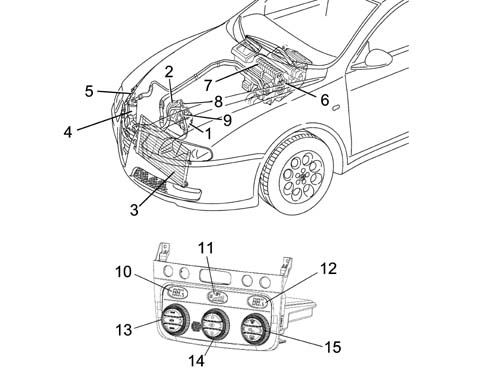
1 - Air conditioning compressor
2 - Pulley with compressor electromagnet coupling
3 - Air conditioning condenser
4 - Drier filter
5 - 4 stage pressure switch
6 - Expansion valve
7 - Evaporator unit
8 - Low pressure connector (BP)
9 - High pressure connector (AP)
10 - Driver's setting/equivalent temperature display
11 - Interior fan speed display. Fan symbol. OFF
12 - Passenger side setting/equivalent temperature display
13 - Driver's temperature selector knob
14 - Interior fan speed/OFF control knob
15 - Passenger side temperature selector knob
Interior air distribution diagram
The distribution of the air in the passenger compartment is illustrated in the diagram.

1 - Fixed upper diffuser for windscreen defrosting and demisting
2 - Adjustable centre upper vent
3 - Fixed diffusers for demisting or defrosting side windows
4 - Orientable and adjustable central diffusers
5 - Orientable and adjustable side windows
6 - Fixed front footwell diffusers
7 - Fixed rear footwell diffusers
8 - Directable and adjustable rear vent
DESCRIPTION OF COMPONENTS
DUCT/DISTRIBUTOR ASSEMBLY
This comprises two modules which contain:
- the fan
- the evaporator
- the upper mixture, distribution and recirculation flap control actuators
- the heater radiator
- the lower mixed air temperature sensors.
A section of the assembly is illustrated below
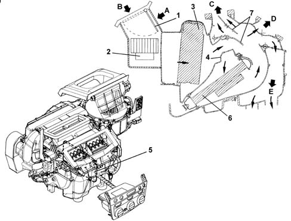
1 - Air intake/recirculation flap
2 - Electric fan
3 - Evaporator
4 - Air mixing flaps
5 - Mixing flaps partition
6 - Heater radiator
7 - Air distribution flaps
8 - Additional heater (diesel version)
9 - Climate control system node (NCL)
A - Recirculation air flow
B - Outside air flow
C - Windscreen/side windows air flow
D - Centre and side vents air flow
E - Interior vents air flow
The fan directs the flow of outside air towards the vehicle interior.
The air introduced into the passenger compartment passes through a combination filter composed of two layers:
- the first "particle" layer has the function of trapping the particles of fine dust and pollen
- the second "active charcoal" layer traps several pollutant agents present in the atmosphere.
If the recirculation function is activated, the special flap directs the flow of air from the inside of the passenger compartment. The flow of air firstly comes into contact with the evaporator then, partly or totally with the heater radiator, depending on the position of the mixture flap. Lastly, the air is sent to the various vents depending on the position of the upper, centre and lower distribution flaps.
All the flaps are operated by electric motors controlled by the control unit.
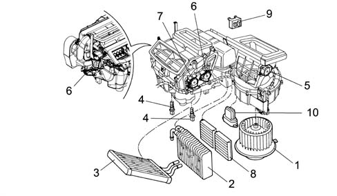
1 - Electric fan
2 - Evaporator
3 - Heater radiator
4 - Lower mixed air sensors
5 - Recirculation flap actuator
6 - Mixed air flap actuators
7 - Air distribution flap actuator
8 - Combination filter element (pollen filter)
9 - Air Quality Sensor
10 - Fan speed electronic variator
The upper mixed air sensors are located on the dashboard vents
All the flaps are activated by special actuators and kinematic systems operated by the control unit.
NCL CLIMATE CONTROL NODE OF ELECTRONIC CONTROL UNIT
The system controls are illustrated in the diagram below.
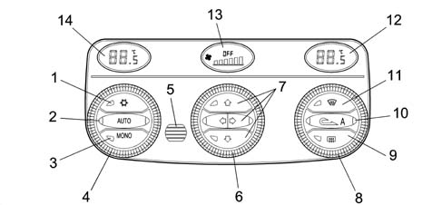
1 - Compressor on/off control button (orange LED)
2 - AUTO button for all functions (2 orange LEDs)
3 - MONO button for single/differentiated temperature selection (orange LED)
4 - Driver's temperature selector knob
5 - Passenger compartment temperature sensor protective grille
6 - Interior fan speed/OFF control knob
7 - Air distribution selection buttons (3 orange LEDs)
8 - Passenger side temperature selector knob
9 - Heated rear windsdcreen control button (amber LED)
10 - Air recirculation control button E/I (2 orange-amber LEDs) A = automatic recirculation operation (amber LED)
11 - MAX-DEF function control button (amber LED)
12 - Passenger side setting/equivalent temperature display
13 - Interior fan speed display with bars (fan symbol - OFF)
14 - Driver's setting/equivalent temperature display
The climate control system has automatic temperature and ventilation control with recirculation.
The user can select the desired temperature within the limits of the system.
The control unit manages the automatic climate control system temperature in two zones of the passenger compartment.
The split automatic climate control system controls the temperature on both the driver and passenger sides throughout the operating range, heating or cooling the air introduced into the passenger compartment to reach the desired comfort level.
The control unit acquires temperature information from the outside air sensor, from the treated air sensors (two upper and two lower), from the passenger compartment internal sensor, from the solar sensor, the misting sensor and the pollution sensor as well as from the body computer (engine rpm and vehicle speed). By processing this data using a special algorithm, the microprocessor carries out the adjustment of the following parameters/functions:
- Air temperature at the driver's/passenger side vents.
- Air distribution at the vents.
- Fan speed (continuous variation).
- Engagement of compressor.
- Recirculation.
The following parameters/functions can be altered manually:
- Fan speed.
- Distribution arrangement
- Compressor disabling
- Defrosting/demisting function
- Recirculation
Manual selections always take priority over automatic ones and are memorized until the user cancels the command by returning to automatic operation. The manual setting of a function does not adversely affect the control of the other automatic functions, in particular the temperature control is always automatic when the system is operating.
Each time it is switched on (Key on) the system restores the conditions memorized when it was switched off, with the exception of the MAX-DEF function which is zeroed.
The entire system can be switched off (OFF) manually, completely deactivating the air conditioning system, using the centre knob (except for the recirculation and heated rear windscreen) insulating the passenger compartment from the outside ambient. The temperature setting symbols in the side displays are switched off. The outside temperature reading is still shown on the instrument panel centre display.
The MAX-DEF function groups together a collection of actions that make it possible to demist both the windscreen and the rearscreen quickly.
At each Key off, the system, after having memorized the controls/actuations situation, implements the distribution to Heat and the recirculation is open.
Operational status display
The display of the climate control system function status is shown through the LED and the DISPLAY.
The brightness of the display decreases when the vehicle lights are switched on.
The symbols on the buttons are lit up by an ignition-operated power supply.
Centre display
It is the negative transreflective type (red) and displays the passenger compartment fan air flow rate by means of bars, the fan symbol and the word OFF.
Temperature setting display (driver and passenger)
It is the negative transreflective type (red) and displays the temperature requested by the driver and by the passenger.
Recirculation function led
Possible functions:
- automatic recirculation LED A
- forced recirculation closed or on (passenger compartment interior air)
- forced recirculation open or off (outside air)
Two LEDs, one orange and one amber signal:
Function | Amber LED | Orange LED | Recirculation status |
|---|---|---|---|
AUTOMATIC | ON | OFF | RECIRCULATION/OUTISDE |
FORCED CLOSED | OFF | ON | RECIRCULATION |
FORCED OPEN | OFF | OFF | OUTSIDE |
Compressor enablement function led (snowflake symbol)
It is orange and, if on, it signals that the compressor is enabled
Auto function led
Two orange coloured LEDs, if on, signal that all the functions, except the recirculation, are managed by the control system.
One of the LEDs (right) does out if there is at least one manual Flow Rate or Distribution command.
The other (left) LED goes out if the system is not capable, through particular manual interventions, of ensuring that the required temperature is reached/maintained.
Max-def function led
It is amber and, if on, signals that the MAX-DEF function is on.
Heated rear windscreen function led
It is amber and, if on, signals that the Heated Rear Widnscreen function is on.
Control unit pin out
The electronic control unit has two connectors:
- A) 40 pin main connector
- B) connector for passenger compartment sensor with 6 pins.
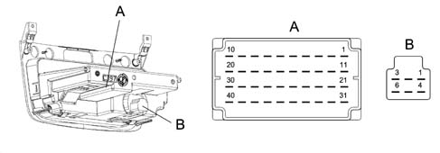
CONNECTOR A
Pin n° | Function | Pin n° | Function |
|---|---|---|---|
1 | Coil B2 recirculation actuator | 21 | NCL power earth |
2 | Coil B1 recirculation actuator | 22 | Additional heater PTC relay 2 (50A) (N.C.) |
3 | Coil A2 recirculation actuator | 23 | Additional heater PTC relay 1 (30A) (N.C.) |
4 | Coil A1 recirculation actuator | 24 | Dimmed side lights positive |
5 | Coil B2 left mixing actuator | 25 | Ignition-operated positive + int/A |
6 | Coil B1 left mixing actuator | 26 | Diagnostic line K (N.C.) |
7 | Coil A2 left mixing actuator | 27 | Pollution sensor PWM signal |
8 | Coil A1 left mixing actuator | 28 | Mist sensor PWM signal |
9 | Fan temperature feedback signal | 29 | Right treated air sensor |
10 | Not connected | 30 | Left treated air sensor |
11 | Coil B2 right mixing actuator | 31 | + 30 from body computer |
12 | Coil B1 right mixing actuator | 32 | Electronically protected NCL earth |
13 | Coil A2 right mixing actuator | 33 | Fan control PWM signal |
14 | Coil A1 right mixing actuator | 34 | CAN A (L.V.) |
15 | Coil B2 right distribution actuator | 35 | CAN B (H.V.) |
16 | Coil B1 right distribution actuator | 36 | Compressor enablement |
17 | Coil A2 right distribution actuator | 37 | Passenger compartment sensor +NTC |
18 | Coil A1 right distribution actuator | 38 | +5V solar sensor power supply |
19 | Right floor treated air sensor | 39 | Right zone solar sensor |
20 | Left floor treated air sensor | 40 | Left zone solar sensor |
CONNECTOR B
Pin n° | Function | Pin n° | Function |
|---|---|---|---|
1 | Ignition-operated positive | 4 | Connection to pin 37 climate control unit (+NTC) |
2 | n.c. | 5 | n.c. |
3 | Power earth | 6 | Connection to pin 32 climate control unit (earth) |
Diagnosis
By means of suitable control logics for the sensors and adjustment through "self-learning" for the actuators, the electronic control unit is capable of recording and memorizing a series of problems and faults that can occur in the system.
These memorized errors can be read using the Examiner by connecting to the Body Comptuer diagnostic socket.
Commands and functions
Air flow rate/control unit off knob
Turning the air flow rate control knob in an anti-clockwise direction beyond the minimum flow rate (below 0 bars and fan off) switches the climate control unit off.
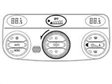
With the compressor enabled the minimum air flow rate is one bar therefore the air flow rate cannot be decreased below this value because the control unit would be switched off.
The following actions take place in OFF:
- memorizing of the current state
- switching off of the display (with the exception of the OFF symbol in the centre display) and the LEDs, with the exception of the Heated Rear Windscreen, if activated.
- closed forced air recirculation and relevant LED lit up
- compressor excluded
- fan excluded
- the mixing flap remains in the max cold position
- the distribution flap in VENT.
- in the OFF state the Heated Rear Windscren button is managed normally without activating the CLIMA system.
Turning the air flow rate control knob in a clockwise direction, or pressing any button (except the Heated Rear Windscreen and recirculation) switches the system back on, activates the requested function, if it was not already previously (otherwise it confirms it) and restores all the other operating conditions that the system has memorized previously, forcing the automatic control of the flow rate if it has been switched on using the AUTO button.
In OFF conditions the recirculation button operates in dual mode (ON/OFF).
When the flap is opened air enters from the outside and the orange LED is off.
When the flap is closed air enters from the outside and the orange LED is off. Recirculation flap without automatic management, amber LED off.
Auto button
Pressing this button cancels any previous manual intevention and restores the automatic mode controlling the following functions:
- Air distribution
- Fan speed
- Compressor
- Control of the driver/passenger side temperature settings
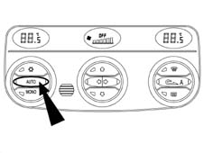
The three LEDs, Compressor and AUTO, when lit up, indicate that all the above functions are controlled automatically.
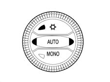
When the right one is off, this means that a Distribution or Ventilation manoeuvre has been carried out manually.
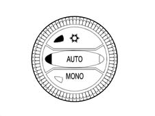
The left one also goes out if the control system (mainly when the compressor is manually disabled) does not reach or maintaine the required temperature.
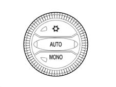
The button (A) that disables the Compressor does not necessarily switch off the right AUTO LED.
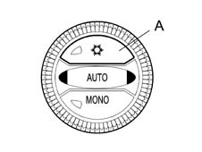
Compressor enablement/disabling button (led on - compressor enabled)
When the button (A) is pressed the LED goes out, the compressor is disabled and the automatic recirculation function is enabled.
Once the button has been pressed, this function remains memorized indefinitely even after the vehicle has been switched off, the same as for the other manual controls.
The button has a dual function and if it is pressed a second time the operation of the compressor becomes automatic (AUTO LED comes on).
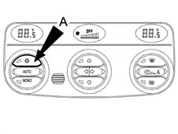
TEMPERATURE SETTING FLASHING LOGIC
When button A is pressed and the LED is off the compressor is disabled. In these conditions the system checks whether the outside temperature is higher or lower than/the same as the temperature set.
When the compressor is disabled it is not possible for the temperature inside the passenger compartment to be lower than the temperature outside.
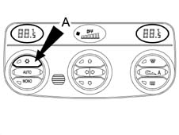
If the outside temperature is less than the set equivalent (Te<Tequiv.Imp) then the system works normally and is capable of complying with the request even without the compressor being switched on.
If the outside temperature is the same as or higher than the equivalent setting, the system is not capable of complying with the user's request and signals this by showing the Tequiv. Imp. value on the display , but with it flashing.
The flashing times are: 0.5 secs ON and 0.5 secs OFF repeated three times for a total of 3 seconds after which the fixed temperature setting remains on the display.
At the same time as the flashing, the Automatic LEDs go out until the Compressor enablement command is restored.
If the outside temperature conditions higher than or the same as the setting remain in the memory or the button (A) is on. The flashing outside temperature reading will be repeated each time the vehicle is started up.
Mono button
Pressing the mono button produces the following results:
- the temperature set by the passenger made is made the same as that set by the driver and the LED comes on.
From that moment the system behaves like a single zone system.
Pressing the MONO button again or altering the temperature set by the passenger causes the following results:
- the MONO button LED goes out and there is a shift to dual zone temperature control.
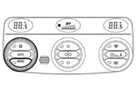
These operational states are maintained even after the ignition key is switched on/off several times and the engine is started up..
Passenger compartment temperature setting knobs
The choice of the passenger compartment temperature setting is made by the control unit each time the battery is connected at 24 °C.
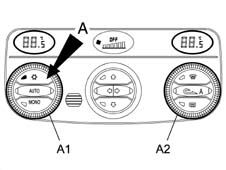
Users can change the temperature settings using the knobs (driver A1, passenger A2)
Turning the knobs in a clockwise direction increases the temperature set and in an anti-clockwise direction it decreases the temperature set.
The increases/decreases are in steps of 0.5 ºC and one complete revolution of the knob produces 24 steps.
A maximum difference between the driver and passenger selections of 7°C is permitted.
Turning a knob until the above difference is reached, the system attaches the current adjustment (setting) for the still knob to the adjustment for the moving knob (neither knob has priority).
The temperature range that can be set varies, in MONO, from 16.5 to 32.5 °C; below 16.5 °C the value set becomes "LO" whilst above 32.5 °C the value set becomes "HI", in DUAL ZONE operation the range goes from 16 °C to 33°C.
When the control unit is switched off, the temperature value set, shown on the display, is memorized and restored at the next key-on.
If the user selects a temperature setting below the outside temperature with the button (A) off (i.e. with the compressor disabled), the impossibility of producing the requested temperature is signalled by the Equivalent Set Temperature flashing.
Hi condition
The HI or maximum heating condition is reached by the user setting an equivalent temperature above 32.5 °C.
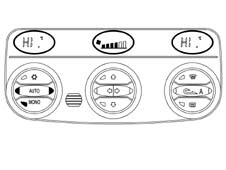
This request by the user, which is only accepted in MONO conditions, forces the system to AUTO (AUTO LED on) and involves the following actions:
- Mixer in fully hot position.
- HEAT distribution
- Air flow rate at maximum value (seasonal)
- Compressor according to logic
- Recirculation remains as requested by user.
In the HI condition manual settings are permitted (and, obviously, the AUTO LED goes out) and the exit from the MONO condition determines the exit from the HI function and a temperature setting of 32.5°C for both zones.
If the driver turns the temperature setting this moves the passenger setting out of HI, to 32.5 °C.C
If the passenger turns the temperature setting this also moves the driver's setting out of HI (to 32.5ºC), then changing their own settings placing the system in the Dual Zone mode.
Lo condition
The LO or maximum cooling condition is reached by the user setting an equivalent temperature below 16.5 °C.
This request by the user, which is only accepted in MONO conditions, forces the system to AUTO (AUTO LED on) and involves the following actions:
- Mixer in max cold position.
- FLOOR distribution
- Air flow rate at maximum value (seasonal)
- Compressor enablement
- Recirculation remains as requested by user. If the request is Automatic, the flap is forced closed when the passenger compartment temperature becomes < T ext. The normal Automatic logic returns on exiting from LO.
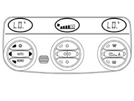
In the LO condition manual settings are permitted (and, obviously, the AUTO LED goes out) and the exit from the MONO condition determines the exit from the LO function and a temperature setting of 16.5°C for both zones.
If the driver turns the temperature setting this moves the passenger setting out of LO, to 16.5°C.
If the passenger turns the temperature setting this also moves the driver's setting out of LO (to 16.5ºC), then changing their own settings placing the system in the Dual Zone mode.
The flashing logic is valid, if the compressor is disabled after the LO request and the forced recirculation is automatic if it was not already.
Air distribution buttons
There are 5 air distribution positions: VENT, BILEVEL, FLOOR, HEAT and DEF.
In automatic mode the system controls the exact direction of the distribution and displays the selection by lighting up the relevant LEDs in the control buttons.
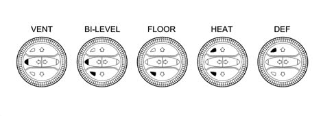
One of the 5 positions can be selected manually by activating the buttons according to the following combination logic
Main distributions:
- DEF (hot/cold or mixed air for defrosting)
- VENT (hot/cold or mixed ventilated air at the front)
- FLOOR (hot/cold or mixed air on the floor)
Combined distributions:
- BILEVEL (hot/cold or mixed air at the front/on the floor).
- HEAT (heated air).
With the main distribution activated (one LED on), when the same button is pressed the existing distribution is confirmed.
With combined distribution activated (two LEDs on), pressing one of the two buttons produces the required distribution.
With the main distribution activated (one LED on), pressing a button which produces a combined distribution can create 2 events:
- pressing briefly produces combined distribution
- pressing for longer produces main distribution.
Recirculation button
Pressing the recirculation button, sequentially, produces three possible types of operation according to the following sequence:
- 1. automatic recirculation (amber LED on)
- 2. forced recirculation closed or on (passenger compartment interior air, orange LED on
- 3. forced recirculation open or off (passenger compartment outside air, orange LED off - amber LED off).
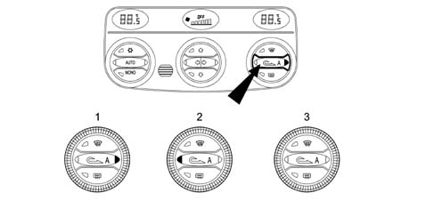
AUTOMATIC OPERATION
In Automatic mode the amber LED remains on by symbol "A" to signal the automatic operation whilst the orange LED remains off.
The recirculation is managed automatically (opening/closing) dependent on both the quality of the air entering and the thermal-regulation transitions.
The "Intake air quality" sensor controls the closure of the recirculation flap when the concentration of harmful gases exceeds the warning level.
In automatically controlled recirculation on conditions there is a timed reopening to allow the exchange of air inside the passenger compartment (as soon as the pollution sensor requests the reopening of the recirculation within a time memorized the control unit controls the opening of the flap for one minute).
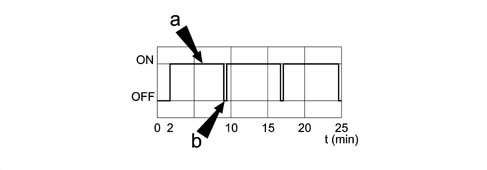
a, Recirculation on
b, Recirculation off
FORCED RECIRCULATION CLOSED OR ON (PASSENGER COMPARTMENT INTERIOR AIR)
With this type of manual operation, signalled by the amber LED off, the orange LED on signals the closure of the recirculation flap.
FORCED RECIRCULATION OPEN OR OFF (PASSENGER COMPARTMENT OUTSIDE AIR)
With this type of manual operation, signalled by the amber LED off, the orange LED off signals the forced opening of the outside air flap.
FORCED RECIRCULATION CLOSED OR ON (PASSENGER COMPARTMENT INTERIOR AIR) WITH THE VEHICLE STATIONARY
In Automatic mode, to prevent the intake into the passenger compartment of air that has been polluted by exhaust gases when the vehicle is stationary, when the vehicle speed is about zero (6 km/h) the system imposes the closure of the recirculation. When the speed of the vehicle goes above 12 km/h, the system restores the pre-existing automatic control conditions.
Fan speed control knob
The air flow rate can be adjusted manually in steps, which are displayed as one bar for every 3 steps up to a maximum of 6 bars when it then goes out. If there have been no manual interventions, the fan speed is controlled continuously by the system and this is shown on the display by the relevant number of bars lighting up according to the flow rate.
The control unit is capable of adjusting the air flow rate depending on the outside temperature. The temperature bands considered are; outside temperature < 15°C; from 15°C to 25°C and > 25°C.
If the ventilation control is operated manually, the AUTO condition is exited.
In particular, to increase or decrease the fan speed, the centre knob is turned clockwise or anti-clockwise, respectively.
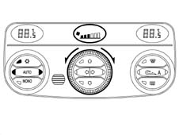
With the ignition on, if the control unit is in the automatic air flow rate control condition, this air flow rate remains at 1 bar (minimum flow rate) until the engine is started up (there is no ventilation at 1 bar if the body computer signals problems with the battery).
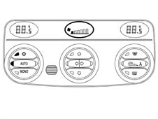
If the compressor is disabled, the ventilation control can be operated manually until the display shows 0 bars and consequently 0% of Qmax.
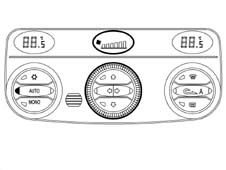
If the compressor is enabled and the engine started up, the manual ventilation cannot go below 1 bar shown on the display and consequently below 20% of Qmmax because with the compressor enabled there must be a minimum air flow rate to prevent the evaporator from freezing.
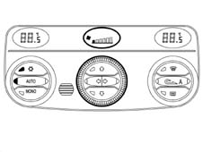
Max def button
The MAX DEF procedure manages the air distribution and flow rate with the aim of demisting the windows as quickly as possible.
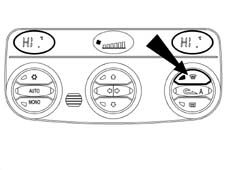
When the MAX DEF button is pressed, the system carries out the following operations:
- Switches on MAX DEF LED
- Memorizing of the function state and previous displays of MAX DEF control
- Switching off of the right AUTO button LED and automatic recirculation (if on)
- Switching on of LEDs for DEF distribution, compressor enablement, MONO, HEATED REAR WINDSCREEN, electric door mirrors and jets with PTC resistance
- Display of the max hot temperature (HI) on both side displays
- Display of the ventilation in the centre display.
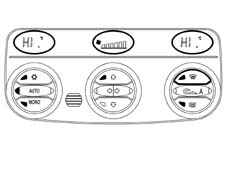
The following controls are also activated:
- Air flow rate 65% of the max flow rate
- Distribution flap in Def position (before implementing the Mix)
- Mixing flaps in Max Hot position (after implementing the Def)
- Forced air intake flap open (dynamic)
- Compressor function enabled
- AQS disabled (if present)
- Rear windscreen defrosting
During the operation of the MAX-DEF it is possible to:
- alter the air flow rate (up/down) at will
- deactivate the heated rear windscreen
It is not possible to:
- Alter the temperature setting (driver/passenger)
- Alter the distribution setting.
It is possible to interrupt the MAX-DEF function by activating any one of the climate control buttons (recirculation, compressor enablement, Auto, Mono, MAX-DEF) implementing the return to the prior to the MAX DEF plus the implementation of the control for the button pressed.
The management of the MAX-DEF procedure takes priority over the management of the following procedures:
- LO (max cold)
- HI (max hot)
If in progress, the execution is interrupted if the MAX DEF procedure is activated.
Heated rear windscreen
The rear defrosting is implemented both with the appropriate button pressed and through the MAX DEF procedure.
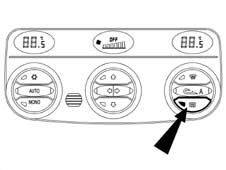
The display of the function state takes place through the relevant LED switching on/off.
The function requesting the activation of the heated rear windscreen is only subject to the presence of the key-on. The HEATED REAR WINDSCREEN function is not memorized with the ignition OFF.
Multifunction buttons
These are the MONO, Recirculation and Compressor Enablement.
All the other buttons are managed normally, like reset.
The function is enabled after the button has been pressed for 50 secs. Pressing any of the other buttons is only recognized after the previous button has been released.
There is a buzzer in the NQS (instrument panel node) that produces the following acoustic signals:
- signal for various alarms
- feeback sound signals, also known as roger beeps (signal received) when a button in the passenger compartment is pressed.
Mode function (shift from degrees centigrade to degress fahrenheit)
Can be activated by three buttons located in the dashboard on the left hand side near the front aeration vent.
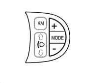
Button +:
- moves the cursor upwards in the display.
Mode button:
- gives access to the mode function and confirms selections made.
Button -:
- moves the cursor downwards in the display.
Example:
Press mode button once.
Access to selection screen.
Move up or down with + or - button.
Press MODE button:
- LIGHTING
- SERVICE
- SPEED
- TIME DATE
- RADIO
- TELEPHONE
- NAVIGATION
- BUZZER (1)
- LANGUAGES
- UNIT (2)
- MENU OFF
To select BUZZER (1) or UNIT (2)
1) Press mode-buzzer-mode again.
The word buzzer appears plus a graph with the owrds off/min max under the graph with the +/- buttons used to adjust the intensity of the buzzer.
To return to the main screen, press the mode button.
2) Press: mode-unit-mode again and select the options described below:
The following words appear:
- KM °C
- ML °C
- KM °F
- ML °F
The units of measurement can be selected using the +/- buttons.
To return to the main screen, press the mode button.
CLIMATE CONTROL SENSORS
Outside air temperature sensor
The NTC sensor is fitted on the door mirror and has an operating range of between 40°C and 80°C
The sytem checks the sensor and updates the value in the following conditions:
- temperature measured greater than that memorized: the update only takes place if the speed of the vehicle is equal to or greater than 30 Km/h and the increase in temperature is measured for more than one minute
- temperature measured equal to or less than that memorized: the system updates the outside temperature value.
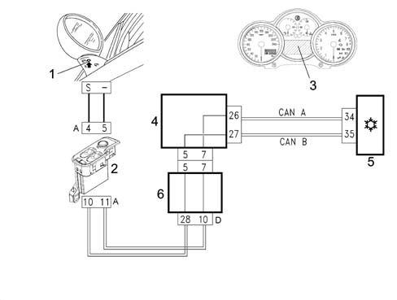
1 - Outside air temperature sensor
2 - NPG driver door node
3 - NQS instrument panel node (outside temperature display)
4 - NBC body computer node
5 - NCL climate control node or electronic control unit
6 - Dashboard control unit
The outside temperature reading is supplied:
- basic (low) version on the NQS display
- plus (high) version on the NQS dot matrix.
The NQS receives information via the CAN line in degrees centigrade with a precision of 0.5 degrees centigrade.
The body computer node (NBC), via the CAN, sends the climate control unit (NCL) the following information in addition to the outside temperature value:
- engine coolant temperature
- engine speed
- vehicle speed (speedometer signal)
- battery voltage (state of the battery charge).
Treated air temperature sensors
There are four treated air temperature sensors.
Two are located in the duct that directs the air to the lower (floor) vents and the other two are located near the centre vents.
They are NTC sensors (the resistance decreases as the temperature increases) with an operating range of -40°C to +100°C, precision 0.5°C, Resistance at 25°C: 10Kohm ± 5%.
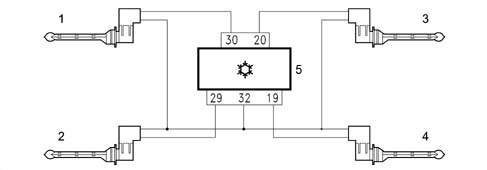
In the centre part of the unit on the side of the rear vent attachment
1 - Left vent treated air sensor
2 - Right vent treated air sensor
Footwell side
3 - Left floor treated air sensor
4 - Right floor treated air sensor
5 - NCL climate control node or electronic unit
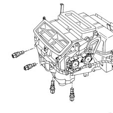
Passenger compartment interior air temperature sensor
This is an NTC sensor incorporated in the climate control unit, resistance at 25°C: 10Kohm ± 5%, operating range -40°C +100°C.
The sensor is ventilated; in effect it contains a small brushless type fan with 6 vanes which has a rotation speed of 3600 ± 600 rpm and an air supply of > 2.0 m/s.
The latter always receives a power supply so that the temperature reading is not affected by the warmer air inside the dashboard.
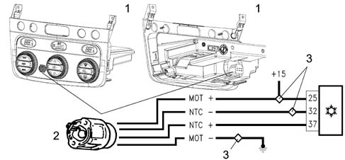
1 - NCL climate control node (front/rear view)
2 - Passenger compartment air sensor (NTC/fan)
3 - Ultrasound welding nodes (earth/positive). The ignition-operated positive comes from the engine compartment junction unit.
Solar sensor
The solar sensor is located in the dashboard near the windscreen.
The sensor is the DUAL ZONE type for the optimum control of the dual climate control system temperature.
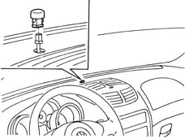
The task of this sensor is to transform the light signals (lux or kcal/m2h) into proportional linear electrical signals. The sensor is a particular type of diode (photodiode) which can vary its conduction depending on the quantity of light it comes into contact with; in practice, the incident light which comes into contact with the photodiode lens releases electrons from the crystalline structure.
As a result electrons and free gaps appear in excessive numbers.
They are directed towards the photodiode spatial or junction zone (NP) and increase the junction current (photoelectric current) in proportion to the intensity of the light. In order to achieve a very high response speed, the photodiode is equipped with a lens which has the task of improving the focus of the light on the semiconductor junction (NP) which makes up the photodiode.
The control unit (NCL) using this signal alters the temperature parameters decreasing it and at the same time acting on the distribution of the air.
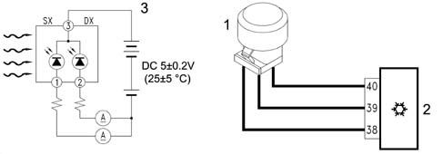
1 - Dual zone solar sensor
2 - NCL climate control node
Pin 38: +5V
Pin 39: right
Pin 40: left
3 - Signal wiring diagram
A.q.s. pollution sensor
The pollution sensor is an electronic device that is designed to supply an enablement signal for the recirculation flap when the air pollution index exceeds pre-set harmful levels to prevent polluted air from being introduced into the passenger compartment. When normal conditions are resumed, the NCL returns the recirculation to the position prior to the activation of the function.
It is fitted in the compartment under the windscreen where the dynamic air enters.
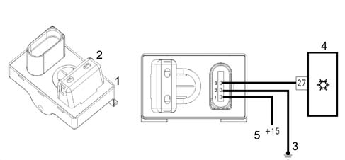
1 - Pollution sensor
2 - Sensitive element zone
3 - Left front earth node
4 - NCL climate control system node
5 - The ignition-operated positive comes from the engine compartment junction unit
The AQS sensor is an integrated system comprising a sensitive element, a processor and an output interface.
It is possible, through the use of a special sensitive element, to detect the presence, in the air surrounding the vehicle, of oxidizing pollutant particles (e.g. CO) or reducing agents (e.g. NOx).
The sensitivity of the system is improved by the potential danger of the pollutant gases according to the M.A.K. index (maximal concentration of harmful substances at work at an exposition of over 8 hours). The sensitive element is heated and regulated at a constant temperature of 300°C to supply the same performance in an ambient temperature range of between -25°C and 85°C. It is not affected by the speed or the temperature of the air passing through it.
The sensor produces a PWM signal within around 40 secs from when it is first supplied.
If the sensor has not been used for a long period its response time varies as described below.
Time not in use | Response time |
|---|---|
< 24h | max 1 sec |
24h<t<76h | max 30 sec |
76hh<t<480h | max 180 sec |
> 480 sec | max 300 sec |
In order to check the sensor:
- place the key in the ON position
- wait 36 secs for the sensor to warm up
- within 120 secs, inject pollutant gas into the sensor using the canister (part. N° 71715571)
- check that the result of the test is positive using the diagnostic equipment and also the efficiency of the sensor which closes the recirculation flap.
Misting sensor
The misting sensor is a device that works without contact using electronic technology to detect the presence of droplets of water (misting) on the interior surface of the windscreen or rearscreen of a motor vehicle. The information coming from the misting sensor is sent to the vehicle climate control system to provide the demisting strategy.
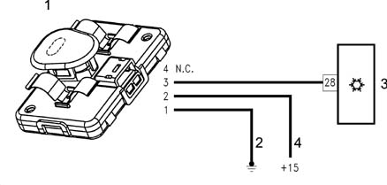
1 - Misting sensor
2 - Rear earth node on tunnel
3 - NCL climate control system node
4 - Ignition-operated positive coming from the dashboard junction unit
The electrical connection consists of a 4 pin connector where 3 pins are used for +12V, earth and PWM (Pulse Width Modulation) signal, respectively.
The sensor casing is made from high resistance polypropylene; since it works without any contact it is fitted on the mounting bracket for the rear view mirror in such a position that it does not impede the view of the driver and this is not simply for aesthetic reasons but so that it is not exposed to direct sunlight which could cause it to deteriorate as a result of the UV rays.
The only part of the sensor that is visible is the frame (it is a rapid attachment cover which acts as a lens and aesthetic cover for the sensor) which conducts the infrared rays to the measurement surface and collects the reflected energy. The fame is usually dark red but it looks almost black. In practice this sensor (equipped with photodiodes) is capable of transforming light signals into a proportional electrical signal to be sent to the control unit (NCL).
The control unit uses this signal to alter the oulet air temperature parameters, raising the temperature of the air, altering its distribution and speed.
Sensor specifications
The specifications of the sensor are:
- The sensor is activated at operating voltages of between 10 and 16V.
- The service temperature is between -20°C and 70°C.
- The sensor is capable of working in an ambient with a relative humidity of 95%.
- It is capable of withstanding strong vibrations without its performance suffering thanks to the type of fastening and a particular algorhithm present in its software.
- It is capable of working normally up to an altitude of 3500 m and can withstand falls from a height of 1 m from the ground without suffering damage and without its performance suffering and it has been designed to prevent dust from getting in. Removing the layer of dust does not cause movements of the calibration an does not adversely affect performance.
Performance
The misting sensor detects information regarding the level of misting on the surface of the windscreen glass. The sensor transmits the information acquired to the climate control system control unit via a dedicated line using a PWM type digital signal.
The signal transmitted includes both information on the level of misting and information on correct operation (diagnostics).
The information is updated/transmitted every 80ms.
Maintenance
The sensor does not require any maintenance except for periodic cleaning of the lens cover (or frame). Cleaning the lens cover may be necessary when a large amount of dirt or impurities accumulate on the lens that would prevent the reception and transmission of an acceptable quantity of light. The lens should be cleaned using a weak solution of soap and water.
ACTUATORS
Stepping motors
The rotor which includes a certain number of pairs of permanent polymagnets, is in the stop position (minimum magnetic energy) due to the polar configuration imposed from outside on the electromagnetically energized stator.
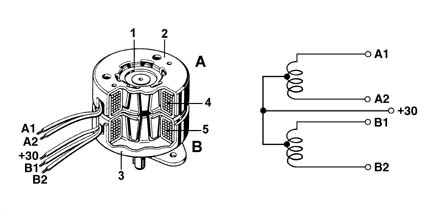
1 - Rotor
2 - Stator casing A
3 - Stator casing B
4 - Winding A
5 - Winding B
If the inversion of the polarity for the energizing windings is carried out correctly by the order of digital commands, the rotor turns exactly one step in the direction chosen and moves into a new stop position.
In this case the energizing current is independent of the load and if its applied with a rapid sequence of impulses (frequency) the stepping motor movement is transformed into a practically continuous movement.
Like in continuous current reduction motors, the polarity of the stator windings is correctly inverted using the switches which are produced by means of electronic power stages in the control unit.
The number of steps for each rotation depends on the number of polar pairs (P) for the rotor and on the number of stator phases (m).
The typical positioning precision for these reduction motors is around ± 5% of the stepping angle and is mainly independent of the sum of the positioning steps, i.e. the positioning angle. Angular increments (normally > 1.8°) can vary depending on the function that the reduction motor must carry out. These types of reduction motors are the ones most widely used in new systems.
Air mixture flap actuators
The adjustment of the treated air temperature is carried out via the temperature setting knobs.
The actuators activate the rotation of the mixture flaps depending on the command from the control unit.
A motor with a 12 Volt supply controls the rotary movement of a drive pin which acts directly on the mixture flaps.
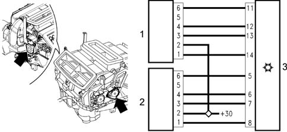
1 - Right air mixing actuator
2 - Left air mixing actuator
3 - NCL climate control system node. The +30 comes from the NBC body computer node (from the ultrasound welding node).
RIGHT AIR MIXING ACTUATOR PIN OUT:
- 1 Coil A1
- 2 +30
- 3 Coil A2
- 4 Coil B1
- 5 n.c.
- 6 Coil B2
LEFT AIR MIXING ACTUATOR PIN OUT:
- 1 Coil A1
- 2 +30
- 3 Coil A2
- 4 Coil B1
- 5 n.c.
- 6 Coil B2
SPECIFICATIONS:
- nominal voltage 12V
- nominal operating frequency 200 Hz
- nominal speed 1.67 rpm
- steps per rev 7200 (7200 impulses for 1 rev)
- reduction ratio 300
- coil resistance 84 ohm
Air distribution actuator
The actuator moves the distribution flaps into the 5 possible positions by means of a rack guide with splining where the the pins and two levers are located.
Main: DEF, VENT, FLOOR;
Combination: BILEVEL, HEAT.
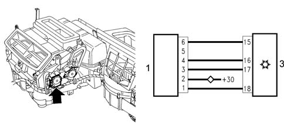
1 - Air distribution actuator
2 - NCL Climate Control System Node The +30 comes from the body computer node (from the ultrasound welding node)
AIR DISTRIBUTION ACTUATOR PIN OUT:
- 1 Coil A1
- 2 +30
- 3 Coil A2
- 4 Coil B1
- 5 n.c.
- 6 Coil B2
SPECIFICATIONS:
- nominal voltage 12V
- nominal operating frequency 200 Hz
- nominal speed 5 rpm
- steps per rev 2400 (2400 impulses for 1 rev)
- reduction ratio 100
- coil resistance 70 ohm
Recirculation actuator
The recirculation actuator activates the rotation of the flap in the two dynamic air and recirculation limit positions with no intermediate positions.
A motor with a 12 Volt supply controls the rotary movement of a drive pin which acts directly on the flap. Reversing the polarity produces a movement in the opposite direction.
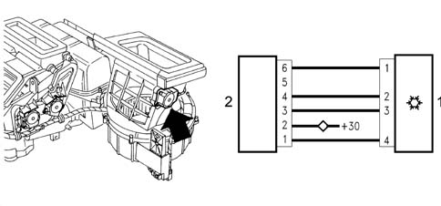
1 - NCL climate control system node
2 - Recirculation actuator. The +30 comes from the NBC body computer node (from the ultrasound welding node).
CLIMATE CONTROL NODE NCL PIN OUT:
- 1 Coil A1
- 2 +30
- 3 Coil A2
- 4 Coil B1
- 5 n.c.
- 6 Coil B2
SPECIFICATIONS:
- nominal voltage 12V
- nominal operating frequency 200 Hz
- nominal speed 5 rpm
- steps per rev 2400
- reduction ratio 100
- coil resistance 70 ohm
The flap is closed in a time of < 2.5 secs.
The feedback control is on all mixing, distribution and recirculation motors.
It is carried out by measuring the difference in the current absorbed by the coils supplied to identify a loss in steps corresponding to a mechanical breakdown or sticking.
SYSTEM COMPONENTS THAT INTERACT WITH THE CONTROL UNIT
The electronic control unit manages the automatic operation of the system controlling the thermodynamic parameters in order to ensure the climatic comfort conditions requested by the occupants of the vehicle.
The specifications of the climate control system are shown in a block diagram below.
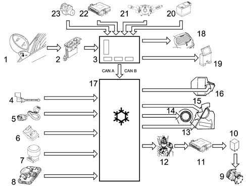
1 - Outside air temperature sensor
2 - NPG driver door node
3 - NBC body computer node. Signals at the CAN A CAN B
4 - Treated or mixed air sensor. 2 at the upper centre vents; 2 at the lower vents
5 - Interior air sensor
6 - Pollution sensor
7 - Solar sensor
8 - Misting sensor
9 - Compressor
10 - Compressor control relay
11 - NCM engine management node I.E. control unit
12 - 4 stage pressure switch
13 - Left - right mixing flaps control actuators
14 - Interior fan
15 - Distribution flaps control actuator
16 - Recirculation flap control actuator
17 - NCL climate control node or electronic control unit
18 - Heated rear window
19 - Diagnostic equipment (Examiner)
20 - Battery. Voltage load condition sgianl at CAN
21 - Screen washer control signal at CAN
22 - Engine coolant temperature NCM signal at CAN
23 - NFR ABS braking system node signal at vehicle speed CAN
OPERATING LOGICS
The controls which allow the use of the automatic heater/climate control system are located on the electronic control unit user interface.
The system is equipped with a split system and the control unit controls both the driver's and the passenger side temperature, heating or cooling the air entering the passenger compartment so that it reaches the temperature desired by the user.
On switching on the various parameters are controlled manually or automatically depending on the selections made by the user before switching off.
Therefore all the manual interventions made before switching off the vehicle are memorized and maintained the next time the vehicle is started up.
This is also valid for the OFF condition; if it was OFF before switching off, the system will be OFF again when the vehicle is started up.
If at the previous key-off, the control was at Max Def, at the next key-on the system will assume the condition memorized before the Max Def.
Each time the battery is connected, the passenger compartment temperature displays will automatically show 24 °C.
Users can change the temperature settings using the knobs (driver/passenger). Turning the knobs in a clockwise direction increases the temperature set and in an anti-clockwise direction it decreases the temperature set.
The increases/decreases are in steps of 0.5 ºC and one complete revolution of the knob produces 24 steps.
A maximum difference between the driver and passenger selections of 7°C is permitted.
Turning a knob until the above difference is reached, the system attaches the current adjustment (setting) for the still knob maintaining the above mentioned difference between the two zones (neither knob has priority).
The temperature variation (range) that can be set goes from 16.5 to 32.5 °C; below 16.5 °C the value set becomes LO whilst above 32.5 °C the value set becomes HI therefore further reductions in the 1st case or increases in the 2nd case do not have an effect on the temperature set.
When the control unit is switched off, the temperature value set, shown on the display, is memorized and restored at the next key-on.
If the user selects a temperature setting below the outside temperature, with the compressor button disabled, the system is not capable of reaching it or maintaining it and this impossibility is signallaed by the Equivalent Temperature Setting flashing.
The dual buttons are the Mono, Recirculation and compressor enablement button.
All the other buttons are managed normally, like reset.
The function is enabled after the button has been pressed for 50 secs. Pressing any of the other buttons is only recognized after the previous button has been released (50 msec). When the buttons are pressed there is an acoustic feedback (roger beep) from the buzzer in the Instrument Panel.
Winter starting transition
Only if the temperature of the coolant is below a certain level (20°C), the passenger compartment temperature is below that requested and the outside temperature is less than 20°C does the automatic function carry out the winter starting procedure.
With the ignition on, the system reads the temperature of the coolant and, until it reaches around 50°C, it sets a minimum air flow rate with the distribution in the defroster position and the mixing flap in automatic mode.
In addition, the recirculation is switched off and the compressor is subject to the operating logic dependent on the outside temperature. It is therefore possible to switch on the compressor automatically to dehumidify the air. If a different configuration was selected manually, it is implemented and signalled, taking priority. The exit from the winter starting transition takes place when the temperature of the coolant reaches 50°C or when the temperature set is the same as that in the passenger compartment.
The enablement to switch on the compressor is carried out in the following cases:
- in manual mode: when the user controls the enablement manually
- in automatic mode: when the management of the maximum code procedure (LO state) is activated or when the maximum demisting procedure (MAX DEF) is activated
In any case, when the system forces a compressor enablement or disabling state, the previous state is memorized. When the conditions that caused the forced operation start to fail, the previous state is restored except when, in the meantime, the user has intervened manually on the compressor enablement/disabling state. In this last case, the manual operation takes priority and cancels the forced operation implemented by the system.
The compressor can also be switched off through the intervention of the 4 stage pressure switch or by the engine management control unit
CLIMATE CONTROL SYSTEM FLUID DYNAMIC CIRCUIT
The system works according to a refrigerant cycle with R134a refrigerant passing through where all the changes in state (from liquid to gas and viceversa) are exploited to absorb and give off heat.
The operation of the system takes place at two pressure levels: the high pressure is maintained by the compressor, the low pressure by the expansion valve.
The refrigerant fluid leaves the compressor in the form of high pressure gas at a high temperature; it then enters the condenser where it is cooled and leaves in a liquid state.
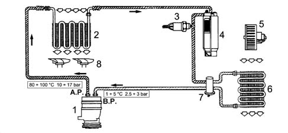
1 - Compressor
2 - Condenser
3 - 4 stage pressure switch
4 - Drier filter
5 - Evaporator cooling fan
6 - Evaporator
7 - Expansion valve
8 - Condenser cooling fan
BP - Low pressure
AP - High pressure
The fluid then passes through the drier filter to enter the expansion valve where the pressure is lowered and, as a result, so too is the temperature.
The fluid, still in a liquid state, enters the evaporator: on vapourizing it removes from the air which enters the passenger compartment. In addition to contact with the cold walls of the evaporator, the air loses a high percentage of humidity and enters the vehicle colder and less humid. Lastly, the fluid enters the compressor again and the cycle resumes.
SANDEN SDV16BA TYPE COMPRESSOR (ALL ENGINE TYPES)
The compressor fitted on all engine types is the SANDEN SD7V16 variable capacity type.
The capacity of the compressor varies starting from the maximum value (161.3cm3/rev) which is gradually reduced (down to 10.4 cm3/rev) following the load variations required by the system - changes in the outside temperature and/or humidity conditions or sudden changes in the engine load conditions.
This solution is defined as unlimited variable capacity.
The compressor is the alternating piston type: the variation in capacity is achieved through the inclination of the connecting rod carrier plate with a consequent variation in the piston stroke: the movement of the plate is activated by an internal regulation valve depending on the balance of pressure upstream and downstream of the compressor.
In particular, a low intake pressure involves partialization of the compressor (reduced capacity), whilst a high pressure involves operation at maximum power (maximum capacity).
The main features of the compressor are:
- Direction of rotation: clockwise
- Continuous number of revs: 7000
- Max number of revs: 8000
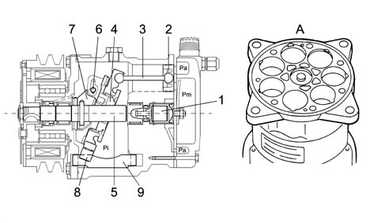
1 - Diaphragm valve
2 - Pistons
3 - Connecting rods
4 - Connecting rod carrier plate
5 - Shaft
6 - Pin
7 - Arm
8 - Slide
9 - Guide
A - Compressor casing without valve plate
The SD7V16 compressor is shown diagramatically and comprises seven pistons (2) with the connecting rods (3) fastened to a connecting rod carrier plate (4). The rotary motion of the plate (4), fitted on the shaft (5) provides the alternating motion for the pistons.
If the plate is inclined at a different angle, this allows the variation of the capacity: maximum inclination (as shown in the diagram) for maximum capacity; inclination at zero limit (vertical position) for minimum capacity, almost zero.
The rotation of the plate (4) takes place around the pin (6) hinged on the shaft (5) arm (7).
The movement of the plate (4) in relation to the shaft (5) takes place by means of splining in a low resistance material.
The plate (4) slides below on a guide (9) by means of a low friction material slide (8).
The diaphragm valve (1) controls the flow rate adjustment depending on the difference between Pa (intake pressure) and Pi (pressure inside the compressor).
Pa, intake pressure
Pi, pressure inside the compressor
Pm, supply pressure.
Quantity of oil and fluid for the climate control system
With the introduction of HFC 134a (HydroFluoroCarbon) refrigerant, the traditional mineral oils used for climate control systems in previous years are not soluble in R134a so special synthetic type oils that can be mixed with this fluid must be used, namely: P.A.G. (Polyalkalineglycols).
They are oils produced through the atomization of alcohol with ethylene and propylene oxides. Since these oils are extremely hygroscopic, the oil containers and compressors must be kept well sealed to prevent oxidation with the humidity in the air; never use engine oils in their place.
Since the oil should circulate transported by the refrigerant throughout the entire A/C system, in order to be able to lubricate the expansion valve and the seals for the connectors as well and finally return to the compressor, the main characteristic of the oil should be that it dissolved in the refrigerant.
The compressor is supplied as spares pressurized with nitrogen to prevent the intake of humidity and impurirites; thefefore, when fitting, the plugs for the inlet and outlet connectors should be removed slowly with the compressor straight.
If the compressor is being replaced, proceed as follows:
- 1) Pour the quantity of oil present from the old compressor into a graduated test tube (C) taking care to let the contents drain thoroughly.
- 2) Pour the quantity of oil present from the new compressor into a graduated test tube (D) taking care to let the contents drain thoroughly.
- 3) Remove the excess quantity of oil (A) corresponding to the difference between the amount of oil in test tube (C) and test tube (B) (A=B-C).
- 4) Pour the amount of oil remaining in test tube (D) into the new compressor.
- 5) Quickly seal the P.A.G. oil container after use as it abosrbs humidity easily
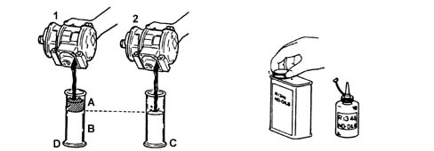
1 - New compressor
2 - Replaced compressor
Topping up with oil if components are replaced
A certain amount of oil circulates together with the refrigerant therefore, if components are being replaced, the quantity of oil required for the individual system must be replaced:
- if the condenser is replaced, add 40 cc of oil;
- if the evaporator is replaced, add 40 cc of oil;
- if the drier filter is replaced, add 15 cc of oil;
- if a pipe is replaced add 5 cm3 for each metre of pipe.
The oil used on systems operating on Freon 12 or R12 should never be confused with the type of oil used on systems running on R134a refrigerant.
The level of the oil in the compressor does not have to be checked periodically unless leaks have been noticed or there are breaks in the pipes or one of the components has to be replaced.
It should be remembered that with the circuit not working and at an outside temperature of 20 - 25 °C the pressure in the entire circuit is 5 - 6 bar which means that when the oil level needs to be checked the system should be drained to prevent the oil and the refrigerant from gushing out.
The table below summarizes the type and quantity of oil and refrigerant fluid.
CONDENSER
The condenser is a heat exchanger located in front of the engine coolant radiator.
The refrigerant fluid in a gaseous state passes throug the condenser coils and liquifies, on average, at a temperature of 60°C.
The air produced by the vehicle moving forwards comes into contact with the outside of the condenser.
When the vehicle is stationary or driving in traffic, the air is produced by the fan used by the radiator for the engine.
An insufficient thermal exchange in the condenser causes an increase in the pressure in the system and the incomplete condensation of the fluid thereby considerably reducing the efficiency of the system.
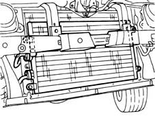
DRIER FILTER
The drier filter is connected by means of apipe to the intake duct in the evaporator and filters the refrigerant, normally in a gaseous state but, to a very slight extent, in a liquid state and the lubricant oil/anti-freeze.
The small amounts of impurities that could block the expansion valve are trapped by two filtering layers. The retention of the water is guaranteed by molecular sieves or by a chemical compound (silicagel). For this reason the components must be kept with the connectors sealed an in dry environments until the time of installation.
In the lower part of the shaped pipe, which is located behind the accumulator and is in contact with the outlet connector, there is an opening designed to ensure the return of the oil to the compressor. In addition there is a metal gauze filter by the oil port.
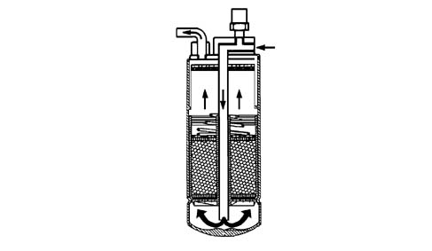
ELECTROMAGNET COUPLING OR PULLEY
The compressors that are used in automative type air conditioning systems are equipped with a special device, known as an electromagnet coupling, which allows the compressor and the engine to from one piece. In this way, the coupling transmits the power, by means of suitable belts usually with a trapezoid section, from the engine drive pulley to the compressor.
When the air conditioning system is not working, the pulley runs in idle on the bearing, since it is always driven to rotate, by means of a trapezoid belt, by the pulley fitted on the crankshaft; the compressor, on the other hand, forms one piece with the hub.
When the air conditioning system is switched on, a magnetic field is created through the effect of the circulation of the current in the electromagnet. The force produced by the magnetic field ensures that the electromagnet attracts the disc on the pulley, which thereby forms one piece with the compressor shaft.
The latter is therefore driven to rotate.
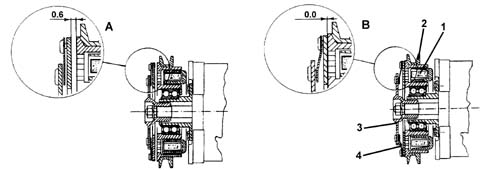
1 - Magnetic coil
2 - Pulley
3 - Front disc
4 - Spring
A) - Rest fitting position
B) - Working position for disc
Wiring diagram showing pulley electromagnet with diode in parallel to the coil for the reduction of the electromagnetic interference produced.
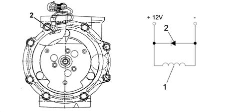
1 - Electromagnet
2 - Diode
The pulley always rotates (connected to the compressor shaft by a coupling) driven by the belt.
When the electromagnet is de-energized, the disc is about 0.6 - 0.8 mm from the pulley, therefore there is no transmission of movement from the pulley to the compressor. When the electromagnet (1) receives a power supply, the disc is attracted against the pulley, overcoming the force of an opposing spring.
MULTISTAGE PRESSURE SWITCH (4 STAGE)
Located on the high pressure inlet pipe on the drier filter.
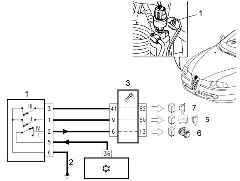
1 - 4 stage pressure switch
2 - Right front power earth
3 - NCL climate control node; pin 5 compressor enablement
4 - NCM engine management node
5 - Pins 9-50 fan low speed enablement
6 - Pins 6-13 compressor enablement
7 - Pins 41-62 fan high speed enablement
The pins shown refer to the 1.8 TS or 3.2 V6 engine types.
This is a 4 stage pressure switch that controls the safe and correct operation of the system.
The 4 pressure stages allows the compressor and the cooling fan to be switched on/off:
- 1st stage (about 2.5 bar): minimum pressure that the compressor can be switched on
- 2nd stage (about 15 bar): pressure that requires the engagement of the first fan speed
- 3rd stage (about 20 bar): pressure that requires the engagement of the second fan speed
- 4th stage (about 28 bar): maxmum pressure that switches off the compressor
EXPANSION VALVE
The expansion valve is fitted on the evaporator inlet and outlet ducts with the task of regulating the flow and expansion (drop in pressure) of the R134a fluid before entry into the evaporator.
1 - Sensitive bulb
2 - Passage
3 - Spring
4 - Plunger
5 - Adjustment screw
6 - Evaporator inlet
7 - Evaporator outlet
8 - To the compressor low pressure circuit
9 - From the filter high pressure circuit
The functions of this sophisticated metering device which regulates the flow of refrigerant are:
- To meter the flow rate depending on the load;
- To analyze the evaporation temperature;
- To stabilize the evaporation pressure;
- To control the overheating of the refrigerant.
The automatic adjustment of the section through which the refrigerant fluid passes, inside the expansion valve, is carried out by a sensitive bulb (1) which is affected by the temperature of the refrigerant fluid coming out of the evaporator. Depending on the latter, the section of the opening is suitably adjusted by means of a spring that moves the shutter and determines the extent of the expansion.
The increase in temperature at the evaporator outlet, detected by the bulb, ensures that the valve is opened with a consequent increase in the flow rate of the fluid in the evaporator.
Conversely, a low temperature involves a decrease in the flow.
EVAPORATOR
The evaporator is a heat exchanger fitted inside the blower/distributor unit. It consists of an aluminium structure with fins to increase the heat exchange surface area.
The evaporator is small in size compared with the condenser.
The refrigerant in the evaporator passes from a liquid state to a slightly overheated vapour.
This change in state is achieved by directing the hot and humid air that needs to be treated onto the evaporator by means of a fan. As the air is at a higher temperature than the refrigerant, it gives off some of its heat to it; on cooling down, the humidity contained condenses on the evaporator fins in the form of droplets.
These are collected in a chamber and moved away, as appropriate. This produces cool, dehumidified air.
The strong cooling of the radiator pack is dues to the change in state, from a liquid to a gas, of the R134a; depending on the refrigerant used, this change takes place with a strong absorption of heat. The process is extremely rapid because the liquid enters the coil atomized and in a low pressure ambient through the expansion valve jet.
It can evaporate very speedily along the coil, absorbing an extremely large amount of heat.
If the evaporator coils are not supplied with enough refrigerant, the evaporation will be limited to part of the coils; in this case, operation will be insufficient and the exchange below par.
In the opposite case, with too great a supply for the evaporator coils, this leads to the incomplete evaporation of the refrigerant via the actual coils. In this case it is possible that the refrigerant will return to the compressor in a liquid state, something that could be damaging to the compressor valves and pistons. In addition, in these conditions, operation will be insufficient with a poor heat exchange. If the pressure reading on the intake pressure gauge is too high or there is excessive oozing from the evaporator coils and the intake pipes, accompanied by poor evaporator cooling, this means that there is an excess supply of refrigerant in the coils.
In vehicle air conditioning systems, the evaporator can receive air from inside the vehicle (recirculation air) or from outside the vehicle, producing an exchange of air inside the passenger compartment. The evaporator is chemically treated to be resistant to corrosion.
HEATER
This is a heat exchanger connected to the engine cooling circuit by means of special pipes: one takes hot water from the engine, thereby allowing the heating of the air introduced into the passenger compartment, the other allows the return of coolant to the engine.
INTERIOR FAN
The motor that sends outside or recirculation air to the evaporator battery is a permanent magnet electric motor of the same type as the one used for the condenser fan but it does not have the same electric power (it is lower). It is located inside the casing near the evaporator; it receives a 12 V supply and is operated at different speeds by an electronic regulator located nearby.
The various operating speeds are required to activate the condensation of the refrigerant with ventilation that would be impossible to achieve dynamically for the vehicle, especially when it is stopped or in traffic
1 - Electronic fan speed regulator
2 - Electric fan
ELECTRONIC REGULATOR
The different fan rotation speeds are controlled by an electronic regulator secured in the actual duct. By means of P.W.M. (pulse width modulation) control signals, pin 8 of the control unit (NCL), at the electronic regulator system input, it controls the voltage and therefore the supply current for the motor with the consequent control of the fan speed and the air cubic metres/hour.
In addition, the regulator processes an output signal (feedback) at a frequency proportional to the motor rotation speed to pin 32 of the control unit (NCL). It is used as a control signal for the motor rotation speed to diagnose increases in temperature due to excessive mechanical resistance or current absorption; in practice, any possible malfunctions.
A - Duty cycle signal high 10% low speed
A - Duty cycle signal high 50% average speed
C - Duty cycle signal high 95% high speed
POLLEN FILTER
To improve comfort it was decided to adopt a combined type passenger compartment air filter (PARTICLES+ACTIVE CHARCOAL) on vehicles with air conditioning. The former makes it possible to prevent the intake of pollen and pollutant particles into the passenger compartment; the second, to reduce the annoying sensation caused by unpleasant smelling substances due to dampness forming on the surface.
1 - Filter
2 - Cover
The main specifications of the filter element are:
- high filtering capacity: the filter traps more than 50% of particles between 0.5 (1 micron in size, more than 80% between 1 (1.5 micron and about 98% bigger than 2 micron.
- easy to replace.
MANUALLY OPERATED CLIMATE CONTROL
Variants compared with the dual zone system
Air conditioning controls
The air conditioning control unit is located in the centre of the dashboard. The controls are located on the outside of the casing.
1 - Temperature selection knob
2 - Air ventilation selection knob
3 - Flow distribution selection knob
4 - Air conditioning on button
5 - Recirculation function on button
6 - Heated rear windscreen on button
The left knob is for selecting the interior temperature desired by the user and it can assume 15 different positions.
The two extreme positions correspond to maximum cold and maximum hot, respectively. The centre knob regulates the air ventilation dependent on four air flow rate fixed mode settings (1, 2, 3 and 4).
In position "0" ventilation is excluded, except if the refrigeration circuit is switched on (LED in button lit up) which produces ventilation at the first speed.
The right knob selects the distribution of the air flows to the passenger compartment that can be produced in different ways.
The positions shown with the white ideogram correspond, in a clockwise direction, to:
- flow to front vents only,
- flow to front and lower vents,
- flow to lower vents only,
- flow to lower vents and to the windscreen,
- flow to the windscreen only
In this case, the adjustment of the flows is entirely manual.
The last position, shown in yellow, corresponds to the "rapid demist" function which automatically sets the conditions for the best demisting of the windscreen; i.e.:
- flow entirely to the windscreen;
- maximum air flow
- mixing with maximum heat available
- air taken from the outside (irrespective of the position of the recirculation button)
- refrigeration circuit enabled (irrespective of the position of the button)
- heated rear windscreen activation.
If the left button is pressed it enables the operation of the air refrigeration circuit; the LED comes on when the button is pressed.
The "enablement" of the operation of the circuit does not always imply that the compressor is switched on, it is regulated by the air conditioning control unit logic and by the engine managment control unit logic.
If the centre button is pressed it switches on the air recirculation function; the LED comes on when the button is pressed. If the button is not pressed, "dynamic" air from the outside flows through.
The right button switches the heated rear windscreen on and lights up the LED.
Control unit pin out
The control unit has a 26 pin single connector.
The control unit pin out is as follows.
Pin n° | Function | Pin n° | Function |
|---|---|---|---|
1 | Power earth | 14 | Coil A2 recirculation actuator |
2 | + 30 positive from battery | 15 | Coil B2 recirculation actuator |
3 | + ignition-operated INT/A | 16 | Coil B1 recirculation actuator |
4 | Not connected | 17 | Coil A1 recirculation actuator |
5 | Not connected | 18 | Fan temp. feeback signal |
6 | Not connected | 19 | Coil B2 distribution actuator |
7 | Not connected | 20 | Coil A2 distribution actuator |
8 | Not connected | 21 | Coil A1 distribution actuator |
9 | Not connected | 22 | Coil B1 distribution actuator |
10 | Fan control PWM signal | 23 | Coil B2 mixing actuator |
11 | Compressor enablement | 24 | Coil A1 mixing actuator |
12 | CAN A (L) | 25 | Coil A2 mixing actuator |
13 | CAN B (H) | 26 | Coil B1 mixing actuator |
The control unit carries out the function of adjusting the temperature in the passenger compartment as quickly as possible to that requested by the user, taking into account the adjustments set and the temperature conditions
Engagement of air refrigeration
This button enables operation of the air cooling circuit, but actual compressor activation is excluded at:
- outside temperatures below 0° - 2°C (if the recirculation is not on)
- passenger compartment temperatures below 0° - 2°C (if the recirculation is on)
The compressor can also be switched on by operating the pressure switch for the circuit or the engine management control unit.
Outside temperature signal
The signal coming from the outside temperature sensor located on the left external rear view mirror is acquired every 50 ms. Sent via the driver's door node (NPG) it is "filtered" appropriately by the body computer node (NBC) and sent to the CAN every 500 msec to be used in the dual zone automatic climate control system.
This information is used by the electronic control unit (NCL) to manage the system. The temperature information is also displayed in the instrument panel (NQS) to inform the user. In manual type climate control systems, this information is always in the instrument panel (NQS).
Dect/distributor assembly
Similar to the unit for the automatic system, it contains a fan controlled by means of an electronic speed regulator.
The distribution, mixing and recirculation flaps are controlled by individual stepping motors (3 motors).
There are 4 for the dual zone automatic system (2 mixing, 1 distribution, 1 recirculation).
1 - Distribution actuator
2 - Mixing actuator
3 - Recirculation actuator
4 - NCL climate control system node
AIR DISTRIBUTION, MIXING, RECIRCULATION ACTUATOR PIN OUT:
- 1 Coil A1
- 2 +30
- 3 Coil A2
- 4 Coil B1
- 5 n.c.
- 6 Coil B2